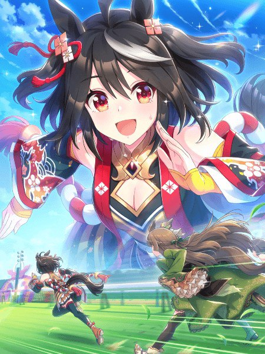

S
SSR Speed — Kitasan Black
Una de las cartas más fuertes del juego. Ideal para builds de velocidad en cualquier tipo de carrera.
- Corner Recovery: Recupera stamina en las curvas, ideal para mantener el ritmo en carreras largas.
- Straightway Adept: Aumenta la velocidad máxima durante un corto período.
- Lasting Strength: Incrementa la velocidad máxima al final de la carrera.
- Focus: Mejora la salida y la aceleración.
- Stamina Recovery: Recupera stamina al usar habilidades.
- Dodging Danger / Strayway: Habilidades de esquiva y reposicionamiento.
